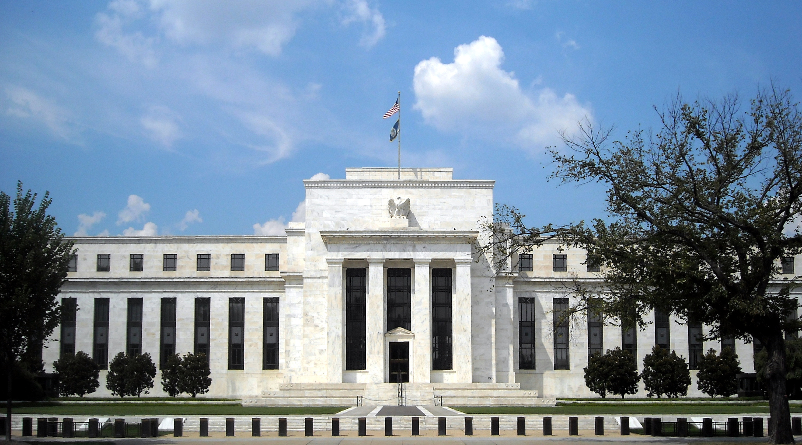

Как работает Федеральная резервная система США (ФРС)
Федеральная резервная система (ФРС, «Fed») — центральный банк США, созданный Законом о Федеральном резерве, который президент Вудро Вильсон подписал 23 декабря 1913 года. Она состоит из Совета управляющих в Вашингтоне (7 членов, срок 14 лет) и 12 региональных федеральных резервных банков; денежно-кредитную политику определяет Федеральный комитет по открытым рынкам (FOMC). Двойной мандат — максимальная занятость и ценовая стабильность (цель по инфляции 2% в год, принята в январе 2012 года). Главный инструмент — ставка по федеральным фондам: на заседании 28 октября 2026 года она сохранена на уровне 3,75–4,00%. По официальным источникам (federalreserve.gov).

Федеральная резервная система — центральный банк США. Её решения влияют на ставки по кредитам и сбережениям, курс доллара и цены, а значит, напрямую касаются и узбеков за рубежом. Ниже ФРС изложена строго по фактам, на основе официальной информации Федерального резерва.
Что такое ФРС и когда она создана
Федеральная резервная система создана Законом о Федеральном резерве, который президент Вудро Вильсон подписал 23 декабря 1913 года. Закон дал стране центральный банк: он управляет денежным обращением, регулирует и надзирает за банками и выступает «кредитором последней инстанции» в кризис. Закон предусматривал не менее 8 и не более 12 региональных резервных банков плюс центральный совет.
Устройство: Совет, 12 банков и FOMC
ФРС состоит из трёх основных частей. Первая — Совет управляющих в Вашингтоне: 7 членов, каждый назначается на 14-летний срок; это федеральное учреждение надзирает за 12 резервными банками. Вторая — 12 региональных федеральных резервных банков (в том числе Бостон, Нью-Йорк, Чикаго и Сан-Франциско), операционные «руки» системы. Третья — Федеральный комитет по открытым рынкам (FOMC), орган, определяющий денежно-кредитную политику. В FOMC 12 голосующих членов — 7 управляющих, президент ФРБ Нью-Йорка и 4 президента резервных банков, которые чередуются. Комитет собирается восемь раз в год.

Кто возглавляет ФРС
Председатель ФРС — это председатель Совета управляющих. С 22 мая 2026 года пост занимает Кевин Уорш; его срок в должности председателя составляет четыре года и заканчивается 21 мая 2030 года. Он сменил Джерома Пауэлла, чей срок в должности председателя длился до мая 2026 года.
Двойной мандат и цель по инфляции 2%
По закону (поправка 1977 года) у ФРС три цели: максимальная занятость, ценовая стабильность и умеренные долгосрочные процентные ставки. Первые две — «двойной мандат». Ценовую стабильность ФРС определяет как инфляцию 2% в год (по индексу цен PCE); эта цель официально принята в январе 2012 года и подтверждается ежегодно. Числовой цели по занятости нет, так как её нельзя измерить напрямую и она меняется со временем.
Главный инструмент — ставка по федеральным фондам
Важнейший инструмент ФРС — целевой диапазон ставки по федеральным фондам. Её повышение удорожает кредиты, охлаждает спрос и расходы и помогает снижать инфляцию; снижение удешевляет кредиты и стимулирует активность. На заседании 28 октября 2026 года FOMC сохранил ставку на уровне 3,75–4,00% — голосование прошло 10 против 2, причём двое членов предпочли повышение на 0,25 пункта. Следующее заседание — в декабре 2026 года, поэтому ставка может измениться.
Другие инструменты
Помимо ставки по федеральным фондам, ФРС влияет на ликвидность рынка и процентные ставки через операции на открытом рынке (покупка или продажа государственных ценных бумаг), проценты по резервным остаткам банков (IORB), учётную ставку (ставка, которую ФРС берёт с банков за кредиты) и масштабные покупки активов — количественное смягчение (QE) и обратный процесс, количественное ужесточение (QT).
Независимость и подотчётность
ФРС независима внутри государства: она принимает решения по денежно-кредитной политике без одобрения исполнительной власти. При этом она подотчётна Конгрессу. По Закону Хамфри — Хокинса 1978 года ФРС дважды в год представляет доклад о денежно-кредитной политике, а председатель дважды в год даёт показания в профильных комитетах Сената и Палаты представителей.
Почему это важно для обычного человека
Ставки ФРС влияют на стоимость заимствований в США — ипотеку, автокредиты, ставки по кредитным картам и доходность сбережений. Поскольку доллар — главная мировая резервная и переводная валюта, политика ФРС влияет и на стоимость доллара; это важно для всех, кто держит доллары, отправляет деньги в Узбекистан или чьи сбережения привязаны к доллару. Точные ставки и решения регулярно публикуются на federalreserve.gov.

Источники
- Federal Reserve — Federal Open Market Committee (FOMC)
- Federal Reserve — FOMC statement, 28 October 2026 (rate held at 3.75–4.00%)
- Federal Reserve — Kevin Warsh, Chair (took office 22 May 2026)
- Federal Reserve History — Federal Reserve Act signed (23 December 1913)
- Federal Reserve — Statement on Longer-Run Goals (2% target, January 2012)